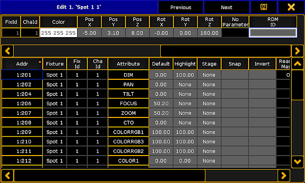

Tap and hold name or ID number of the fixture or channel you would like to edit.
-or-
Press Edit and tap a fixture or a channel in the corresponding sheet.
-or-
Press Edit + Fixture + number of the fixture or channel to be edited + Please.
The edit pop-up opens.

Edit Pop-up
The upper spreadsheet in the pop-up displays the modules of a fixture.
The lower spreadsheet in the pop-up displays the attributes of these modules.
Important:
It is possible to edit all fields marked in gray. For detailed information see live patching.
Hint:
To jump between fixtures or channels, tap either Previous or Next in the title of the edit pop-up.
Hint:
If a fixture is linked to an RDM address, RDM ID will be displayed in the header of the upper spreadsheet.
Furthermore, it is possible to edit the order within the column in the pop-up. To change the order, tap and hold the title of the column and pull it up or down.
To close the edit pop-up, tap in the upper right corner.